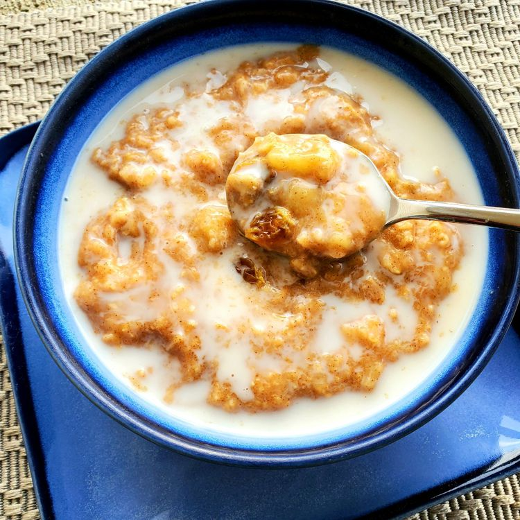

Porridge

This porridge recipe is a winter favorite of ours that builds on a
traditional British breakfast dish. We add sultanas, bananas, and
cinnamon, and it's awesome.
Combine water, oats, sugar, and salt in a saucepan. Add bananas and
cinnamon. Bring to a boil, then reduce heat and simmer until the liquid is
absorbed, stirring frequently. Serve in bowls and top with a splash of
cold milk if desired.
Ingredients
- 2 ½ cups water
- 1 cup rolled oats
- 1 tablespoon white sugar
- 1 teaspoon salt
- 2 bananas, sliced
- 1 pinch ground cinnamon
- ½ cup cold milk (Optional)
Steps
-
Combine water, oats, sugar, and salt in a saucepan. Add bananas and
cinnamon. Bring to a boil, then reduce heat to low, and simmer until the
liquid has been absorbed, stirring frequently.
- Pour into bowls, and top each with a splash of cold milk.